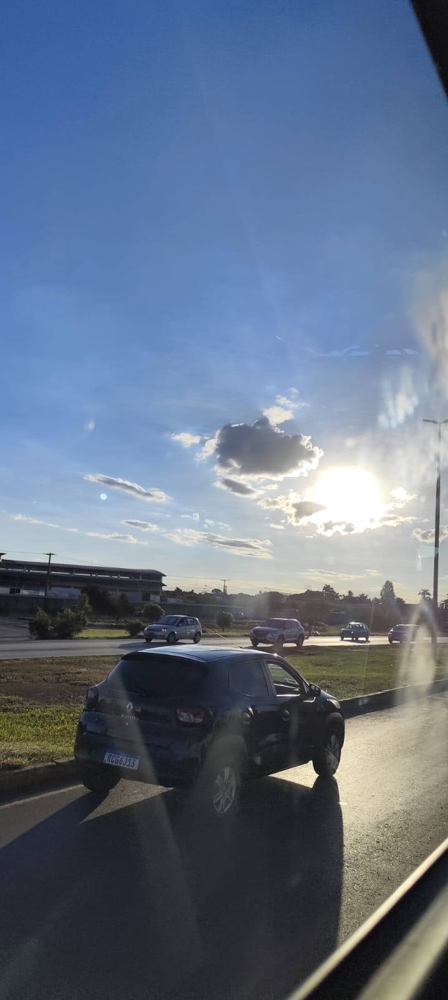
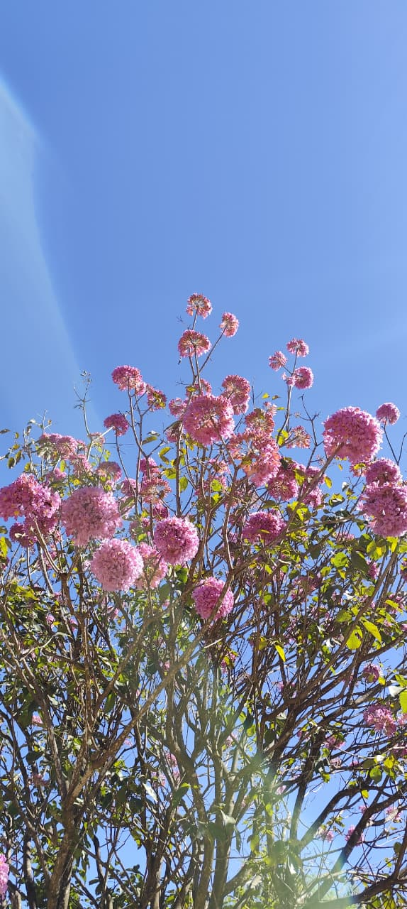

O mundo ganhou mais cor há:
desde o momento em que nossos caminhos se cruzaram.
Estou Apaixonado
João Paulo & Daniel
Acredito que nunca havia experimentado uma sensação tão arrebatadora quanto a de vê-la entrar naquele ônibus pela primeira vez. Bastou um único instante para que eu percebesse que você possuía uma luz singular. A ansiedade tomou conta de mim; eu precisava descobrir quem era a dona daquele olhar tão marcante. Como obra do destino, vi-me na mesma equipe que a mulher mais deslumbrante daquele lugar. Fui ao retiro em busca de uma experiência espiritual, sem imaginar que os planos de Deus reservavam um encontro tão especial. A cada palavra sua, meu coração encontrava paz. Ali, você revelou ser muito mais do que uma presença encantadora: demonstrou ser uma mulher forte, admirável e que sabe exatamente o que deseja da vida.
Seu sorriso tem o raro poder de iluminar qualquer ambiente, mas é a sua risada espontânea que verdadeiramente cativa a alma: é divertida, leve e reflete a mais pura essência do seu coração. É um traço seu que me marcou profundamente por transmitir as coisas mais belas deste mundo. Eu passaria horas a fio apenas contemplando a sua alegria, permitindo-me encantar cada vez mais.
É fascinante observar o equilíbrio perfeito entre a sua doçura e a sua impressionante maturidade. Vê-la conduzir o seu próprio empreendimento e testemunhar o seu belíssimo passo no batismo apenas multiplicaram a minha admiração. Esses momentos revelam uma mulher decidida, inabalável, que persegue e conquista seus sonhos, por mais desafiadores que pareçam. Se você pudesse mensurar a grandeza da admiração que nutro por ti, certamente teria a dimensão exata da mulher extraordinária que se tornou.
Compartilhar conversas com você é um privilégio; o tempo simplesmente se dissolve sem que eu perceba. Assim como as rosas que você tanto aprecia, a sua presença perfuma a vida com uma leveza rara e preciosa. Seu olhar é um mistério fascinante que me atrai irresistivelmente, oferecendo-me paz e, ao mesmo tempo, despertando uma paixão profunda.
Como confidenciei a você certa vez, os adjetivos parecem insuficientes para descrevê-la. Você é a mulher do sorriso radiante, do coração imenso, do olhar sereno. É a mais bela, doce, gentil, madura e cativante — e, se me permite a insistência, dona do sorriso mais lindo que já vi. Há infinitas virtudes que eu poderia enumerar, mas a maior verdade é que você conquistou um espaço constante em meus pensamentos, apenas sendo quem é. Apesar de nossos momentos ainda serem breves, as nossas conversas e os seus abraços, tão acolhedores e inesquecíveis, reacenderam a minha alma. Fizeram-me sentir genuinamente vivo, como se eu estivesse descobrindo o amor pela primeira vez.
Sempre que vejo algo lindo, como o sol que você tanto ama, você invade os meus pensamentos...

Nem mesmo toda a luz do sol é capaz de brilhar tanto quanto o seu sorriso em meus pensamentos...

A força desse rosa vibrante contra o azul infinito é o retrato exato de como a sua presença coloriu o meu mundo e despertou tudo o que estava adormecido em mim...
Outros modões que tocam e trazem você ao meu pensamento:
Diante de tudo o que você despertou em mim, eu preciso perguntar: você aceita embarcar em uma aventura diferenciada?